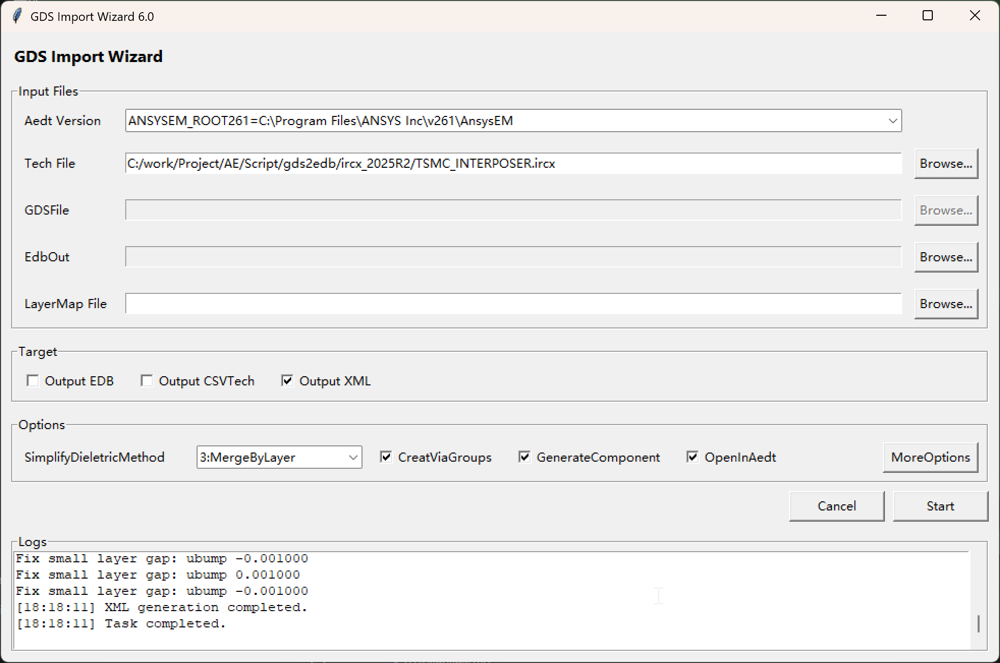

第4章 界面模式：Output XML
4.1 适用场景
当你需要先生成 Control XML（用于后续导入流程），而不立即生成 EDB 时，使用 Output XML。生成的xml可以在3D Layout中作为Control file直接导入GDS文件。
4.2 启动方式
python gdsImportWizard.py
4.3 输入要求
必填：
- Tech File
可选：
- LayerMap File
- GDSFile（XML 模式不是必需项，界面中默认禁用 GDS 输入）
4.4 操作步骤
- 在 Target 选择 Output XML。
- 选择 Tech File。
- （建议）选择 LayerMap File。
- 在 Options 中设置关键参数，尤其是 SimplifyDieletricMethod。
- 如需更多控制参数，点击 MoreOptions 编辑 gds2edb.cfg。
- 点击 Start 开始生成 XML。
- 在 Logs 中确认 XML generation completed。

图4-1 Output XML 模式界面
4.5 输出文件规则
- 默认输出文件扩展名为 .xml。
- 通常与输入文件位于同目录并使用同名基名。
4.6 结果检查
- 目标目录下存在 .xml 文件。
- Logs 中无 ERROR。
- 打开 XML 文件可看到 Stackup、ImportOptions 等结构。
4.7 Options
Options 决定输出结果，特别是 SimplifyDieletricMethod，决定了薄层介质的合并方式。 该参数详细差异见第6章。
4.8 常见问题处理
- 提示 Tech File is required：未选择 Tech 文件。
- XML 内容与预期差异大：优先检查 SimplifyDieletricMethod、IgnoreLayersReg、UseDefaultDF 等配置。